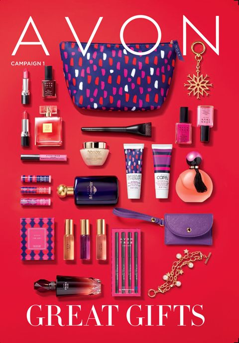
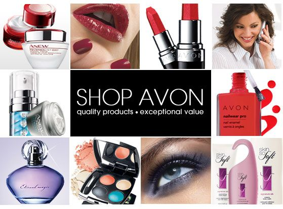
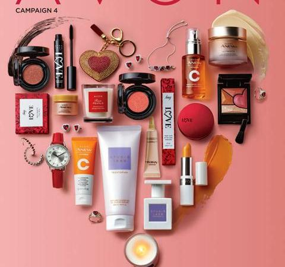

AVON
WHO ARE WE ?
Avon Products, Inc or simply known as Avon, is an American-British multinational cosmetics, skin care, perfume and personal care company, based in London.
It sell directly to the public. Avon had annual sales of $9.1 billion worlwide in 2020.
It is the fourteenth-largest beauty company and with 6.4 million representatives, is the second largest multi-level marketing enterprise in the world(after Amway).
The company's CEO is Angela Cretu who was appointed to the position in Jnuary 2020.
In May 2019, the maltinational company Natura & Co announced its intent to acquire Avon; the deal closed in January 2020.Following the merger ,existing Natura shareholders held 73% of the combined company, Natura Holding S.A with former Avon shareholders owning 27%. At merger completion, Avon became a privately held company, commoin stoock was removed from the NYSE trading.
Avon's founder, David H McConnell, intoially sold books as a door-to-door salesman to Nwe York homes.In September 1886, he decided to sell perfumes rather than books.
He started the new business in a small office at 126 Chambers Stree , Manhattan , New York. McConnell changed the company name in1892. His business partner suggested calling it "California Perfume Company".His business partner was living in California at the time and suggested the name because of the abudance of flowers in Califonia.
In May 1894, Alexander D. Henderson joined the company, became vice-president and treasure, and helped shape its policies and assist in its growth.In 1897 they built a laboratory in Suffern, New York.
Avon uses both door to door salespeople and brocjhures to advertise its products. Soome Avon training centers have a smallretail section with skin careproducts, such as creams, serums, make-up and washes.
Avon recruits sales representatives who sell beauty products, jewellery, accessories and clothing.
Some of the brand-names used by the company include Avon(also known as Avon True Color), mark, imari, far away, sweet honestly, little dress scents, avon fashions, anew, feelin fresh and skin so soft. According to the U.S governement, Avon has 5 million to 6 million sales representatives operating in over 100 countries as of 2014.,Avon and its subsidaries have 40,000 to 50,000 employees, 6000 of whih are in the United States.
OUR ITEMS:   